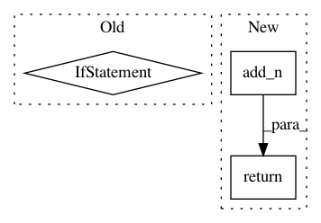

02fb71f730f6e600edbf27f58cea86209cb5dc55,tensorforce/core/networks/layer.py,Linear,tf_regularization_losses,#Linear#,313
Before Change
def tf_regularization_losses(self):
losses = super(Linear, self).tf_regularization_losses()
if self.l2_regularization > 0.0:
losses.append(self.l2_regularization * tf.nn.l2_loss(t=self.weights))
if self.bias is not None:
losses.append(self.l2_regularization * tf.nn.l2_loss(t=self.bias))
return losses
class Dense(Layer):
After Change
if self.bias is not None:
losses.append(self.l2_regularization * tf.nn.l2_loss(t=self.bias))
return tf.add_n(inputs=losses)
class Dense(Layer):
In pattern: SUPERPATTERN
Frequency: 3
Non-data size: 3
Instances
Project Name: reinforceio/tensorforce
Commit Name: 02fb71f730f6e600edbf27f58cea86209cb5dc55
Time: 2017-10-15
Author: aok25@cl.cam.ac.uk
File Name: tensorforce/core/networks/layer.py
Class Name: Linear
Method Name: tf_regularization_losses
Project Name: GPflow/GPflow
Commit Name: b0ddc6d1632f63632583ea70caca678fce3696f3
Time: 2019-10-21
Author: st--@users.noreply.github.com
File Name: gpflow/models/model.py
Class Name: BayesianModel
Method Name: log_prior
Project Name: tensorflow/kfac
Commit Name: aa5f9ddfdf0447c7a53f4e2676a1c866189315cd
Time: 2019-02-01
Author: jamesmartens@google.com
File Name: kfac/python/ops/curvature_matrix_vector_products.py
Class Name: CurvatureMatrixVectorProductComputer
Method Name: _total_loss